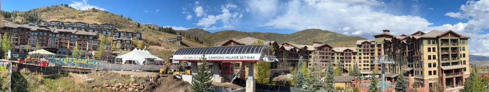

March skiing conditions in Park City are the most misunderstood of the season. People hear "spring" and picture slush and bare patches, when the snowpack is usually at its deepest of the year. What changes is not how much snow there is. It is what the surface does between nine in the morning and four in the afternoon.

The melt and refreeze cycle
One process governs almost everything about March skiing conditions. Daytime sun melts the top of the snowpack; overnight cold refreezes it. Repeat that for a few weeks and the surface stops behaving like midwinter snow altogether.
Park City's own spring guidance is candid about the consequence: the cycle can leave some slopes icy in the morning and soft by the afternoon. That is not a bad day. It is a day with a timetable, and the skiers who enjoy March are the ones reading it. A February week asks none of this — cold air keeps the surface broadly consistent from first chair to last.
Is March the snowiest month in Park City?
No, and the margin is smaller than most people assume. Resort snow tracking data puts January highest, with December, February and March clustered within a few inches of each other, on an annual average around 277 inches across roughly 56 snowfall days.
| Month | Average snowfall | Typical surface |
|---|---|---|
| December | About 59–62 in | Cold, base still building |
| January | About 63–65 in | Coldest and snowiest |
| February | About 62 in | Cold and consistent |
| March | About 58–61 in | Firm mornings, soft afternoons |
Two published versions of that dataset differ by a few inches a month, which is why the figures above are ranges rather than points. The conclusion survives either version: March gets very nearly as much new snow as February, and it falls on a base three months deeper. Our season calendar sets out the full winter window.
Why the base is deepest when the season looks oldest
This is the fact that should change how you read March. Utah's median snowpack peak date is about 3 April, measured against the 1991 to 2020 normals, at a median statewide peak near sixteen inches of snow water equivalent. In 2024, a near-normal year, the peak landed on 2 April at 18.8 inches.
March, in other words, is when the snowpack finishes building. Runs that were thin and rocky in December are filled in; the terrain that opens last in a season is open. Park City Mountain's own hours page gives winter 2026/27 as 20 November 2026 to 19 April 2027, weather dependent, so a March week is not the end of anything.
Snow safety teams open and close areas through the spring as conditions dictate. A deep base does not guarantee that a particular run is available on a particular morning, so check the daily report rather than assuming.
How to time a March ski day
Lifts run 9 am to 4 pm. In March that window spans two or three genuinely different surfaces, so the order you ski it matters more than the runs you choose.
Start east and south. Those aspects take the earliest sun and soften first, and the resort explicitly recommends beginning there and working round to north-facing runs as the day warms. North-facing slopes hold cold snow longest — which makes them a poor first lap and a good last one. Get the sequence backwards and you spend the morning on refrozen crust while the soft snow sits unskied on the other side of the ridge. The Canyons Village lift map guide covers which lift serves which aspect.
One calendar detail worth knowing for 2027: the clocks go forward on 14 March, so every March week after that date gets an extra hour of evening light. Four o'clock stops feeling like the end of the day.
The villa this guide is written from
We own a Premier Two-Bedroom Villa inside Westgate Park City Resort, in Canyons Village. It is 1,100 square feet, two kings and two queen sleeper sofas, sleeping eight in one unit. Full kitchen, a kitchenette in the lock-off studio, two bathrooms with walk-in showers, and a short walk to the Red Pine Gondola. For larger parties we have three such villas, up to 24 guests.
Our open weeks for 2027 are Presidents' Week, 13 to 20 February, and spring break, 21 to 28 March — the second of which is the week this guide describes. Rented directly by the owners.
Corn snow, and when you get it
Corn is what the melt and refreeze cycle produces when it runs long enough. Repeated thaw and freeze rounds the snow grains off and loosens them into a granular surface that is forgiving, predictable and much kinder to tired legs than February hardpack. Park City's guidance is that when the sun comes out after a storm, the resulting corn offers good turns.
The timing is narrow and local. On a given slope corn arrives when the overnight freeze has softened just enough and not yet turned to slush — frequently a mid-morning to early-afternoon window that moves around the mountain as the sun does. Chasing it is the whole game in spring, and it is the reason some skiers prefer March to January outright.

When March disappoints
A median is a median, and 2026 is the cautionary year. Utah's snowpack peaked on 9 March at 8.4 inches of snow water equivalent — a record low, around 52 per cent of normal, and more than three weeks earlier than the average across measuring sites. Warm weather produced rain where snow was wanted. In a winter like that, March is patchy rather than deep.
There is no way to insure against it a year ahead, so the sensible move is to pack for both. Warm afternoons and freezing mornings in the same day is the defining March problem, and layers plus proper eye protection matter more than they do in February. Our packing list covers what actually gets used. If you are weighing late March against a February week, the spring break 2027 guide sets the two side by side.
March skiing in Park City: common questions
What are ski conditions like in Park City in March?
Firm or icy first thing on some slopes, softening through the day as the sun works on the surface, and setting hard again overnight. The base is usually deep, often at its seasonal peak. It is a month where the hour and the aspect matter more than they do in midwinter.
What is corn snow, and why do skiers want it?
Corn is the granular surface that forms when a snowpack goes through repeated days of melting and nights of refreezing. The grains round off and loosen into something forgiving and predictable. Park City's own guidance notes that when sun follows a storm the resulting corn gives good turns.
What time of day is best for skiing in March?
There is no single best hour, because it moves with the aspect. The general shape of a March day is firm early, best through the middle, and heavy or slushy by late afternoon at lower elevations. Lifts run 9 am to 4 pm, so the usable window is narrower than it looks.
Which slopes should you ski first on a March morning?
The ones facing east and south, because they take the earliest sun and soften first. The resort recommends starting there and moving round to north-facing runs as the day warms. North-facing slopes hold cold snow longest, which makes them the afternoon option rather than the first lap.
How deep is the snowpack in Park City in March?
Usually close to its deepest. Utah's median snowpack peak date is about 3 April on the 1991 to 2020 normals, at a median statewide peak near sixteen inches of snow water equivalent. March is the month the pack finishes building rather than the month it starts going.
Can March skiing in Park City be bad?
Yes, and 2026 showed how. Utah's snowpack peaked on 9 March at 8.4 inches of snow water equivalent, a record low and roughly 52 per cent of normal, more than three weeks earlier than usual. A warm, thin winter leaves March patchy rather than deep.